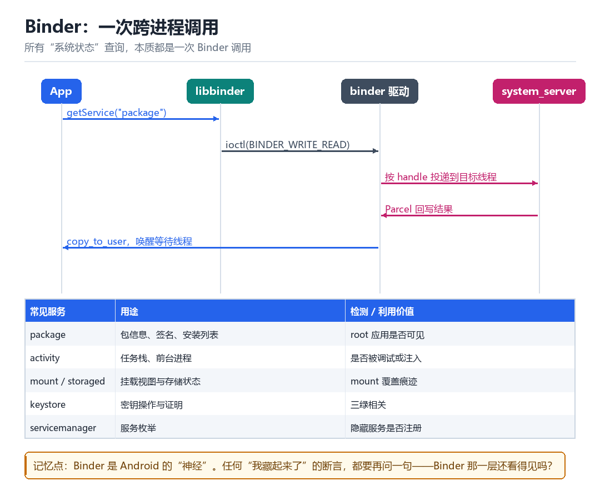
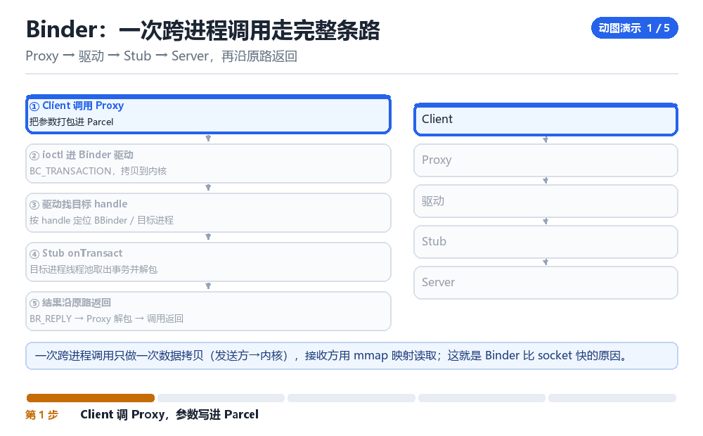

Android IPC 相关内容
常见服务与 Binder
Android 的所有“系统状态”，都是某个 Binder 服务说了算。
13.1 一次跨进程调用的路径

App 调 getService("package") 拿到一个代理对象，调用它的方法时：参数被写进 Parcel，通过 ioctl(BINDER_WRITE_READ) 交给驱动；驱动按 handle 找到目标进程的 Binder 节点，把事务投递到目标线程池；目标执行完后把结果写回 Parcel，驱动拷回调用方并唤醒它。
13.2 五个最常打交道的服务
| 服务 | 用途 | 检测/利用价值 |
|---|---|---|
| package | 包信息、签名、安装列表 | root 应用是否可见 |
| activity | 任务栈、前台进程 | 是否被调试、是否被注入 |
| mount / storaged | 挂载视图与存储 | mount 覆盖痕迹 |
| keystore | 密钥与证明 | 三绿相关 |
| servicemanager | 服务枚举 | 隐藏的服务是否注册 |
13.3 为什么“服务层”是隐藏的必争之地
很多隐藏方案只改了文件视图，忘了服务层。结果本地 ls 看不到某个应用，但通过 PackageManager 一查还在；或者本地的 /proc 干净，但 ActivityManager 的运行进程列表里多了一个。
所以完整的隐藏必须做到“四本账一致”：文件视图、包管理视图、进程视图、服务注册表。任何一本对不上，就是线索。
pm list packages | grep -i root
dumpsys activity processes | head -30
service list | wc -l
ls /data/app | wc -l13.4 本章自测
- 一次 Binder 调用经过哪四个角色？
- 为什么“只改文件视图”的隐藏是不完整的？
- 四本账分别是什么？各自怎么查？
- 如果某个服务被隐藏了注册，App 调用时会看到什么？
13.5 深入：Binder 一次传输的数据上限
一次 Binder 事务的 Parcel 有大小限制（约 1MB 减去页开销）。超过就会抛 TransactionTooLargeException。这解释了很多“传大图/大列表就崩”的现象，也解释了为什么系统要用 ashmem / 文件描述符传大数据。
| 限制 | 数值 | 后果 |
|---|---|---|
| 单次事务缓冲区 | 约 1MB | 超限抛异常 |
| 共享内存传递 | fd 传递 | 大数据走这条路 |
| 线程池上限 | 15 个 binder 线程 | 并发高时排队 |
13.6 实战：抓一次 Binder 调用
- 用
service list找到目标服务。 dumpsys <service>看它的接口与状态。- 需要更细的调用时，用
frida-trace -i ioctl抓BINDER_WRITE_READ。 - 解析 Parcel 里的 interface token 与 code，判断调的是哪个方法。
service list | head -40
dumpsys package com.example.app | head -60
dumpsys activity processes | grep -i example13.7 原理推演：为什么 Binder 是“一次拷贝”
传统的 socket / pipe 是“两次拷贝”（用户 → 内核 → 用户）。Binder 用 mmap 把内核缓冲区映射到接收方进程，于是发送方写一次，接收方直接读——这就是“一次拷贝”。
| 机制 | 拷贝次数 | 适用 |
|---|---|---|
| socket | 2 | 通用 |
| Binder | 1 | Android IPC |
| 共享内存 | 0（需自己同步） | 大数据 |
这也解释了 Binder 的 1MB 限制：那个 mmap 区域大小有限。想传更大的数据，就得用 fd 传递共享内存。
13.8 数据细节：一次事务的 Parcel 布局
u4 strict_mode_policy
u4 work_source_uid
// 然后是 interface token（字符串）
// 然后是 code（方法号）
// 然后是参数（由双方约定）抓 Binder 调用时，看到 interface token 就能知道“调的是哪个接口”，看到 code 就知道“哪个方法”。这两个字段是逆向 Binder 通信的钥匙。
一句话问出去，四个角色接过来
Proxy → 驱动 → Stub → Server，再沿原路返回

App 里那行 getPackageInfo(...) 看着像一次普通函数调用，其实一次都没在本进程里执行。把这条调用按成慢动作：参数先被一格格塞进 Parcel，然后一次 ioctl(BINDER_WRITE_READ) 把整包数据交给内核驱动；驱动按 handle 找到 system_server 里的那个 Binder 节点，把事务丢进它的线程池，某个线程被唤醒、反序列化、真正去查包信息，再把结果沿原路写回来。一次「本地调用」，实际上是四个角色接力跑完的一次往返。
这个结构决定了 Android 里一件很根本的事：所有「系统说了算」的状态，都不在你自己的进程里。文件视图可以藏，属性的显示值可以改，但只要 PackageManager 那边还登记着，App 一问就能问出来。隐藏方案最后崩在哪，往往就崩在这一层没对上。
跟着一个 Parcel 走完一趟往返
- App 侧代理 → 对
BPackageManager的代理对象 → 把 interface token、方法 code、参数依次writeString/writeInt进 Parcel → 结果：一次调用被压成一段扁平字节。 - libbinder → 对
/dev/binder→ 把 Parcel 包进binder_transaction_data，发ioctl(BINDER_WRITE_READ)→ 结果：数据从用户态拷进内核，调用线程开始等回复。 - Binder 驱动 → 对 handle → 查本进程的
binder_ref，找到目标binder_node与binder_proc→ 结果：确定该把事务投递给哪个进程的哪条 todo 队列。 - 驱动 → system_server 线程池 → 对目标的一个空闲 binder 线程 → 唤醒它，把事务数据映射到它的用户空间 → 结果：等待中的线程拿到一份 Parcel。
- 服务端桩 `onTransact` → 对 Parcel → 按 code 分派、调真正的
PackageManagerService实现 → 结果：包信息被查出来，写进 reply Parcel。 - 驱动回程 → 对发起方 → 把 reply 拷回它的用户空间、唤醒调用线程 → 结果：App 侧代理从 Parcel 里读出
PackageInfo，那行普通函数终于返回。
动手：抓一次真实的 Binder 往返
# 1) 先确认服务在册、接口长什么样
adb shell service list | grep -i package
adb shell dumpsys package com.target.app | head -40
# 2) 抓一次调用（另开终端触发目标 App 的包查询）
frida-trace -U -i ioctl -f com.target.app
# 在生成的 ioctl.js 里过滤 request == BINDER_WRITE_READ，打印 args[2] 前 32 字节
# 3) 顺手核对四本账是否一致
adb shell pm list packages | grep -i root
adb shell 'ls /data/app' | wc -l
adb shell dumpsys activity processes | grep -i target | head -10成功：service list 里能看到 package 这一项，frida-trace 在触发查询时打出一串 ioctl 调用，并且 cmd 参数对应 BINDER_WRITE_READ（0xc0306201）；第 3 步三个命令的结果彼此对得上——pm 查不到的包，/data/app 下没有目录，dumpsys 的进程列表里也没有它。失败要分开看：service list 里压根没有目标服务，说明名字写错或该服务被隐藏了注册；frida-trace -i ioctl 一次都没命中，多半是进程被 spawn 后停在门口没继续，先在 REPL 里 %resume；而三本账对不上（本地看不到、服务端查得到）恰恰是最有价值的「失败」——它正是隐藏没做全的直接证据，别把它当工具坏了。
| 现象 | 说明哪本账没对上 | 一条命令复核 |
|---|---|---|
| 本地 ls 干净、pm 查得到 | 文件视图 vs 包管理视图 | pm list packages | grep -i root |
| service list 里没有某服务 | 服务注册表被改 | service list | wc -l 与基线比 |
| 大图/大列表传着就崩 | Parcel 超过单次事务上限 | 看 TransactionTooLargeException |
| 四本账全一致 | 隐藏闭合（或本来就没藏） | 再查 dumpsys 进程与 mount |
| 调用卡住不返回 | 线程池满 / 同步 Binder 死锁 | dumpsys activity processes 看线程 |
这条「App → libbinder → 驱动 → system_server」的路径，第 05 章 AMS 让 zygote fork 进程时走的就是它，第 08 章 magiskd 的 companion 通道也是同一套；第 03 章 TEE 的 attestation 请求同样先经 Binder 落到 keystore；第 04 章那句「四本账必须一致」，到这里才给出了每本账各自的查询接口。第三部会把本章一笔带过的 binder_ref / binder_node 与线程池调度完整展开。